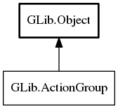

ActionGroup
Object Hierarchy:
Description:
ActionGroup represents a group of actions.
Actions can be used to expose functionality in a structured way, either from one part of a program to another, or to the outside world. Action groups are often used together with a MenuModel that provides additional representation data for displaying the actions to the user, e.g. in a menu.
The main way to interact with the actions in a GActionGroup is to activate them with activate_action. Activating an action may require a Variant parameter. The required type of the parameter can be inquired with get_action_parameter_type. Actions may be disabled, see get_action_enabled. Activating a disabled action has no effect.
Actions may optionally have a state in the form of a Variant. The current state of an action can be inquired with get_action_state. Activating a stateful action may change its state, but it is also possible to set the state by calling change_action_state.
As typical example, consider a text editing application which has an option to change the current font to 'bold'. A good way to represent this would be a stateful action, with a boolean state. Activating the action would toggle the state.
Each action in the group has a unique name (which is a string). All method calls, except list_actions take the name of an action as an argument.
The ActionGroup API is meant to be the 'public' API to the action group. The calls here are exactly the
interaction that 'external forces' (eg: UI, incoming D-Bus messages, etc.) are supposed to have with actions. 'Internal' APIs (ie: ones
meant only to be accessed by the action group implementation) are found on subclasses. This is why you will find - for example -
get_action_enabled but not an equivalent set
call.
Signals are emitted on the action group in response to state changes on individual actions.
Implementations of ActionGroup should provide implementations for the virtual functions list_actions and query_action. The other virtual functions should not be implemented - their "wrappers" are actually implemented with calls to query_action.
All known implementing classes:

All known sub-interfaces:
Namespace: GLib
Package: gio-2.0
Content:
Methods:
Signals:
Inherited Members:
All known members inherited from class GLib.Object